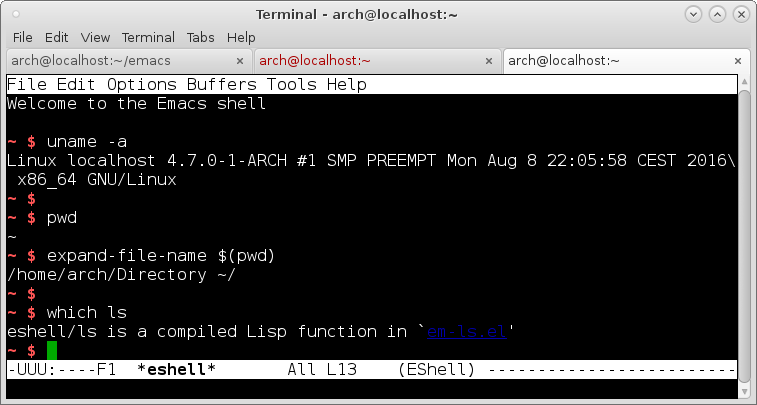
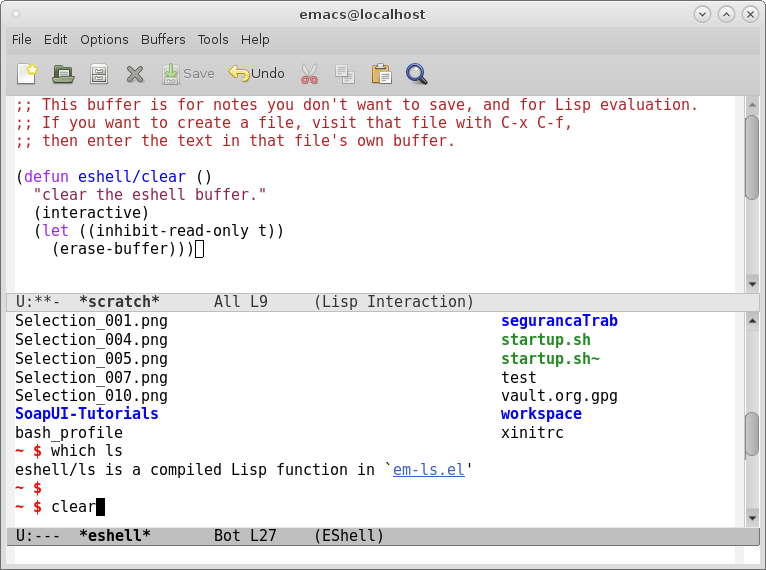
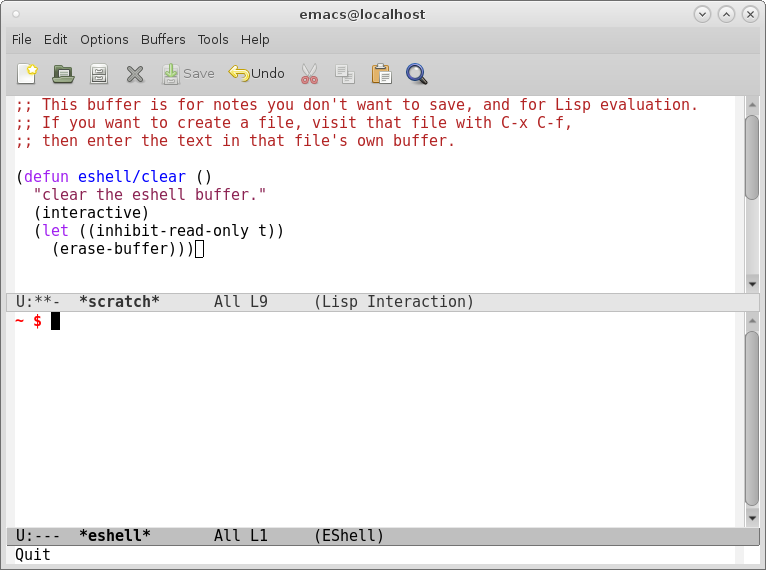
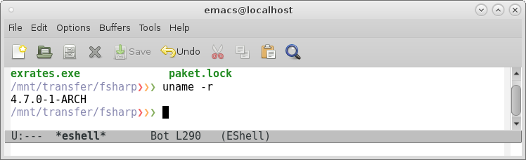

Eshell
Table of Contents
- 1. Eshell
- 1.1. Overview
- 1.2. See also
- 1.3. Start Eshell Directly from command line
- 1.4. Useful elisp commands inside eshell
- 1.5. Clear eshell
- 1.6. Set eshell prompt
- 1.7. Change Eshell current directory
- 1.8. Change Eshell current directory to current buffer
- 1.9. Open eshell in another window
- 1.10. Open eshell in another frame
- 1.11. Open eshell file names from ls output with Return key
- 1.12. Functions to copy eshell data to clipboard
- 1.13. Creating Eshell aliases programatically
1 Eshell
1.1 Overview
Eshell is a shell implemented in Emacs with many commands implemented in Elisp which makes it cross platform and highly integrated to Emacs. The commands ls, pwd, cd and etc. works in the same way for Linux, Windows or OSX. In Windows OS it is a good alternative to cmd.exe.
Command to clear Eshell. It can be invoked with $ clear in eshell.
Features:
- Shell implemented in Emacs Lisp
- Integrated to Emacs
- Eshell can run elisp functions and can be extended in Elisp.
- It is Multiplatform, works on Linux, OSX and Windows.
Example:

1.2 See also
- Mastering Eshell / Mastering Emacs
1.3 Start Eshell Directly from command line
Start eshell directly in a new Emacs sessions in the terminal wihout load init.el.
$ emacs -Q -q -nw --eval '(eshell)'
Or
$ emacs -Q -q -nw -f eshell

Start eshell directly in a new Emacs Window
emacs -q -f eshell # Don't load init file.
Or
emacs -q -f eshell # Load init file

1.4 Useful elisp commands inside eshell
Eshell can run Elisp command - M-x <command> like ordinary Unix shell apps.
Open a file in the current window
$ find-file /etc/hosts.conf
Open a file in other window
$ find-file-other-window /etc/host.conf
Open a file in other frame
$ find-file-other-frame /etc/host.conf
Browser a directory in current window
$ dired /var/log
Browser a directory in another window
$ dired-other-window /var/log
Browser a directory in another frame
$ dired-other-frame /var/log
1.5 Clear eshell
(defun eshell/clear () "clear the eshell buffer." (interactive) (let ((inhibit-read-only t)) (erase-buffer)))
In eshell:
~ $ which eshell eshell is an interactive compiled Lisp function in `eshell.el' ~ $
Before the command clear:

After the command clear:

1.6 Set eshell prompt
1.6.1 Simple prompt
(setq eshell-prompt-function (lambda () "eshell > "))

Prompt with current directory
1.6.2 Colorized prompt
(setq eshell-prompt-function (lambda nil (concat (propertize (eshell/pwd) 'face '(:foreground "#8787af")) (propertize "❯" 'face '(:foreground "#f75f5f")) (propertize "❯" 'face '(:foreground "#ffaf5f")) (propertize "❯" 'face '(:foreground "#87af5f")) (propertize " " 'face nil))))

1.7 Change Eshell current directory
This command can be used in Menus or with helm.
(defun eshell-chdir (path) (with-current-buffer "*eshell*" (cd path) (eshell-emit-prompt))) (eshell-chdir "~/Downloads")
1.8 Change Eshell current directory to current buffer
Usage: M-x eshell-cwd
(defun eshell-cwd () " Sets the eshell directory to the current buffer Usage: M-x eshell-cwd " (interactive) (let ( (path (file-name-directory (or (buffer-file-name) default-directory))) ) (with-current-buffer "*eshell*" (cd path) (eshell-emit-prompt))))
1.9 Open eshell in another window
Source: mini-eshell.el
Usage: M-x open-mini-eshell
;; open up a mini-eshell (defun quarter-window-vertically () "create a new window a quarter size of the current window" (split-window-vertically) (other-window 1) (split-window-vertically) (other-window -1) (delete-window) ) (defun open-mini-eshell () "open a mini-eshell in a small window at the bottom of the current window" (interactive) (quarter-window-vertically) (other-window 1) (eshell) )
1.10 Open eshell in another frame
Usage: M-x eshell-other-frame
(defun eshell-other-frame () " Open eshell in another frame. Usage: M-x eshell-other-frame " (interactive) (with-selected-frame (make-frame) (eshell)))
1.11 Open eshell file names from ls output with Return key
Source: Emacs Wiki
This code allows to open files from $ ls command output by selecting
the file name and hitting return or by clicking with the middle mouse
button.
(eval-after-load "em-ls" '(progn (defun ted-eshell-ls-find-file-at-point (point) "RET on Eshell's `ls' output to open files." (interactive "d") (find-file (buffer-substring-no-properties (previous-single-property-change point 'help-echo) (next-single-property-change point 'help-echo)))) (defun pat-eshell-ls-find-file-at-mouse-click (event) "Middle click on Eshell's `ls' output to open files. From Patrick Anderson via the wiki." (interactive "e") (ted-eshell-ls-find-file-at-point (posn-point (event-end event)))) (let ((map (make-sparse-keymap))) (define-key map (kbd "RET") 'ted-eshell-ls-find-file-at-point) (define-key map (kbd "<return>") 'ted-eshell-ls-find-file-at-point) (define-key map (kbd "<mouse-2>") 'pat-eshell-ls-find-file-at-mouse-click) (defvar ted-eshell-ls-keymap map)) (defadvice eshell-ls-decorated-name (after ted-electrify-ls activate) "Eshell's `ls' now lets you click or RET on file names to open them." (add-text-properties 0 (length ad-return-value) (list 'help-echo "RET, mouse-2: visit this file" 'mouse-face 'highlight 'keymap ted-eshell-ls-keymap) ad-return-value) ad-return-value)))
1.12 Functions to copy eshell data to clipboard
1.12.1 Copy current directory
(defun clipboard/set (astring) "Copy a string to clipboard" (with-temp-buffer (insert astring) (clipboard-kill-region (point-min) (point-max)))) ;; Copy current directory to clipboard ;; ;; Usage: Enter $ copy-pwd in eshell ;; (defun eshell/copy-pwd () (clipboard/set (eshell/pwd))) ;; Copy file name with full path to clipboard ;; ;; Usage: Enter $ copy-fpath <filename> in eshell. ;; (defun eshell/copy-fpath (fname) (let ((fpath (concat (eshell/pwd) "/" fname))) (clipboard/set fpath) (concat "Copied path: " fpath)))

1.13 Creating Eshell aliases programatically
(eshell/alias "ff" "find-file $1") (eshell/alias "fw" "find-file-other-window $1") (eshell/alias "fr" "find-file-other-frame $1")
Example of usage: